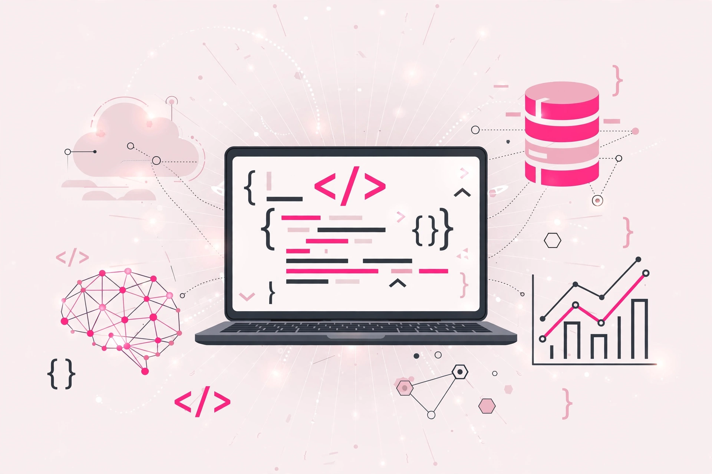

01
Mon parcours
Titulaire d'un Bac+4 en Informatique et Sciences du Numérique, spécialité Communication Digitale, j'ai suivi une formation en développement backend à Nehonix Academy en janvier 2025 avant d'intégrer le programme D-CLIC.
Développeuse web junior
Je conçois des interfaces accessibles, responsives et soignées, avec une attention particulière portée aux détails.

À propos de moi
Étudiante en informatique et sciences du numérique à l'Université Virtuelle de Côte d'Ivoire, je m'intéresse au développement web, au webmarketing et à l'analyse de données. Je développe progressivement mes compétences grâce à des formations et des projets pratiques en HTML, CSS, JavaScript, bases de données et outils numériques.
Curieuse, autonome et orientée vers l'apprentissage, je souhaite mettre mes compétences au service de projets digitaux concrets tout en poursuivant ma progression dans le domaine du numérique.

01
Titulaire d'un Bac+4 en Informatique et Sciences du Numérique, spécialité Communication Digitale, j'ai suivi une formation en développement backend à Nehonix Academy en janvier 2025 avant d'intégrer le programme D-CLIC.

02
Au fil de mon parcours, ma curiosité pour le numérique s’est transformée en une véritable envie d’explorer différents domaines. Depuis près d’un an, je me forme également en autodidacte à la programmation et au développement web à travers la plateforme freeCodeCamp, où j’apprends progressivement à construire et comprendre des solutions numériques. De la programmation au développement web, en passant par le SEO, le référencement et le web analytics, je cherche constamment à comprendre, créer, analyser et améliorer les solutions numériques. Cette diversité d’intérêts me pousse à continuer d’apprendre et à développer des compétences complémentaires dans l’univers du digital.

03
Mon objectif est de construire un profil polyvalent dans le numérique, à la croisée de la programmation, du développement web, du SEO, du référencement et du web analytics. Je souhaite continuer à renforcer mes compétences techniques, notamment en développement, data, cybersécurité, cloud et intelligence artificielle, afin de pouvoir concevoir des solutions numériques utiles, performantes et adaptées aux besoins des utilisateurs. À long terme, j’ambitionne d’évoluer dans un environnement où je pourrai apprendre continuellement, relever des défis techniques et participer à la création de projets innovants.
01
Création de pages responsives et accessibles avec HTML, CSS et JavaScript.
HTML · CSS · JavaScript02
Conception de contenus et d'expériences adaptées aux besoins des utilisateurs.
UI · Contenu · SEO03
Création de stratégies et de contenus numériques pour développer la visibilité d'un projet.
SEO · Contenu · Stratégie